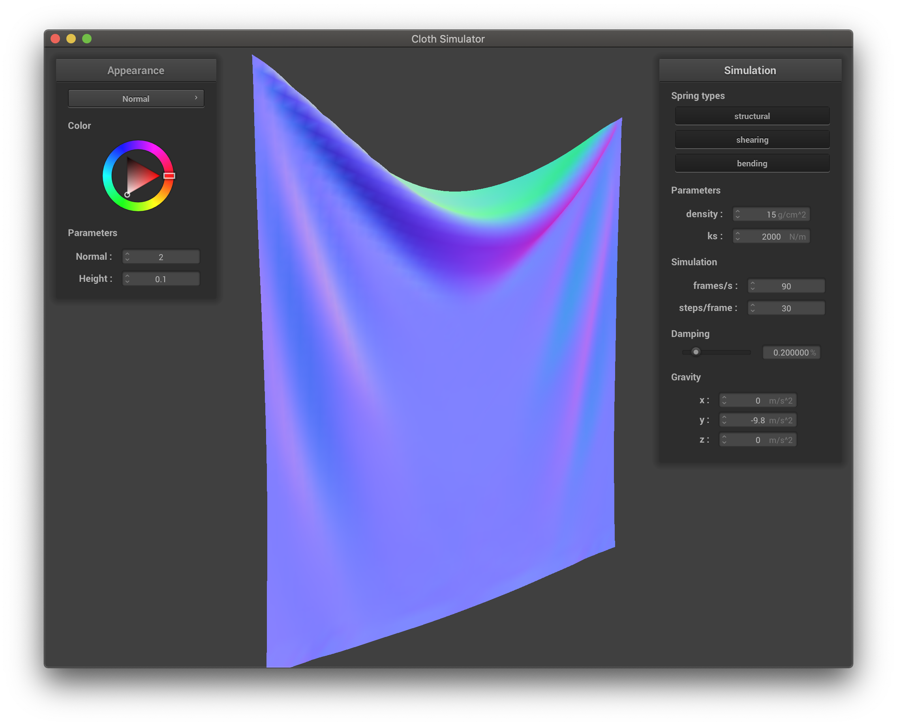
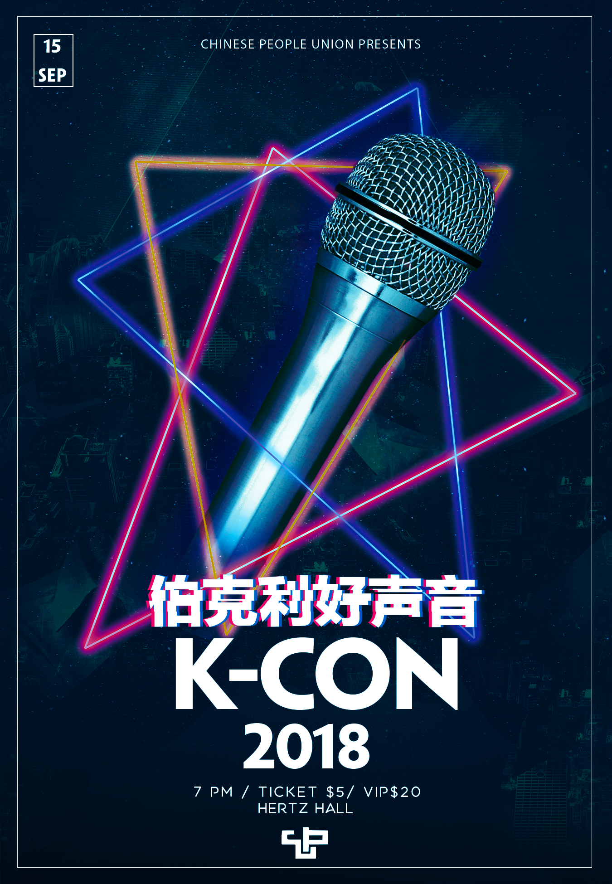
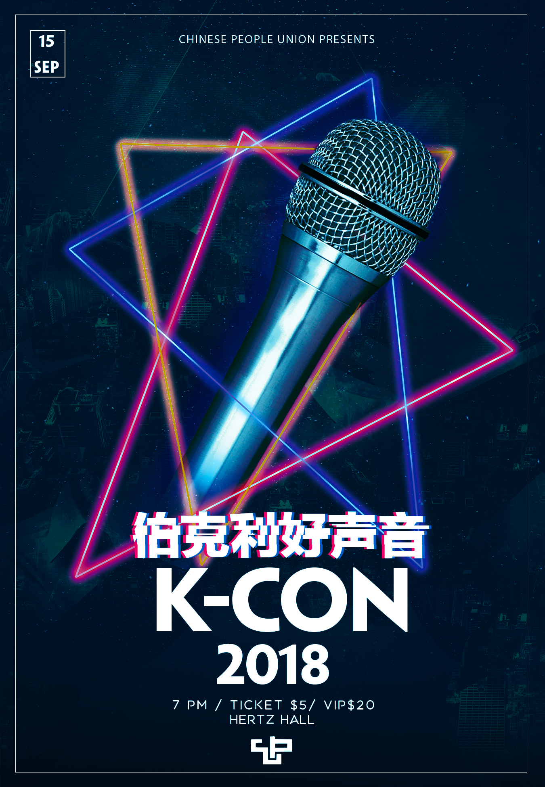

Projects
View some of my recent work

Python
Blackhole Raytracer
Worked on a team of 3 to build a ray tracing program that realistically simulates the behaviors of a black hole based on schwarzschild geometry
View DetailsC ++
Cloth Simulation
Created a cloth simulator that uses point mass and spring to mimice the behavior
Took account of springs constrains and gravity via numerical simulation
Implemented the scenario where the cloth collides with other projects and itself
Added different shaders that run in parallel on GPU with GLSL language
View Details


Java
Gitlet
Designed an git-like version control system from scratch based on git’s own hash-based system to achieve high performance
Functionality includes local add, commit, remove, and reset operations and remote branch, merge, and conflict-detection
View Details 
